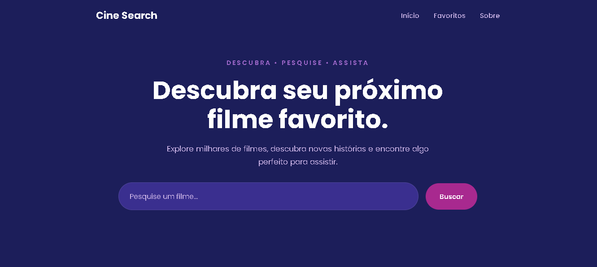

CineSearch
Sobre o Projeto
Cine Search é uma aplicação web desenvolvida para pesquisa de filmes utilizando a API do TMDB. O usuário pode pesquisar por um título e visualizar informações como pôster, nome, avaliação, ano de lançamento e sinopse. A aplicação também permite salvar filmes como favoritos utilizando o Local Storage. O projeto foi desenvolvido com HTML, CSS e JavaScript, utilizando Vercel para hospedagem e funções serverless para auxiliar na comunicação segura com a API.
Imagem do Projeto

Tecnologias utilizadas
- HTML5
- CSS3
- JavaScript (Vanilla JS)
- TMDB API
- Local Storage
- Vercel
- Node.js
- Git e GitHub
- Variáveis de ambiente (.env)
Conceitos praticados
- Manipulação do DOM — criação e alteração dinâmica dos cards e informações dos filmes.
- Eventos em JavaScript — uso de cliques, envio do formulário de pesquisa e interação com os favoritos.
- Funções — organização da lógica em funções, como a função de busca de filmes.
- Funções — organização da lógica em funções, como a função de busca de filmes.
- Consumo de API — comunicação com a API do TMDB para buscar dados dos filmes.
- fetch() e requisições HTTP — obtenção dos dados da API.
- Programação assíncrona — uso de async/await para trabalhar com as respostas da API.
- Arrays e métodos de array — utilização de métodos como .map(), .some() e outros para manipular os filmes e favoritos.
- Objetos e propriedades — acesso aos dados retornados pela API, como título, avaliação, pôster e sinopse.
- Condicionais — tratamento de situações como filme sem pôster, sinopse ou ano.
- Validação e tratamento de entrada — uso de trim() para evitar pesquisas vazias.
- Local Storage — armazenamento dos filmes favoritos no navegador.
- JSON — leitura e manipulação dos dados recebidos da API.
- Variáveis de ambiente — proteção da chave da API.
- Serverless Functions — criação de uma função na Vercel para intermediar a requisição à API.
- Git e GitHub — versionamento e gerenciamento do código.
- Deploy — publicação da aplicação na Vercel.
- Responsividade — adaptação da interface para diferentes tamanhos de tela.